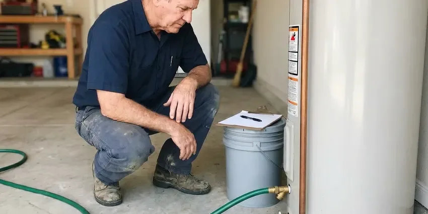

Water Softener Maintenance in Anniston, AL
Don't let hard water problems persist in your Anniston, AL home. BRV Plumbing offers thorough water softener maintenance to ensure your system performs optimally.
- Fast, Local Service
- Licensed Technicians
- Transparent Pricing
- Guaranteed Work

Need Water Softener Maintenance in Anniston, AL?
Schedule your maintenance appointment with BRV Plumbing now and enjoy the benefits of a well-functioning water softener system.
Your Go-To for Water Softener Maintenance in Anniston, AL
BRV Plumbing provides expert water softener maintenance across Anniston, AL. Regular upkeep is crucial to combat the mineral buildup common in our local water supply, ensuring your system runs efficiently and prevents costly repairs down the line.
Our expertise includes:
- Resin Bed Cleaning and Recharge
- Brine Tank Inspection and Cleaning
- Valve and Control Head Servicing

Additional Plumbing Maintenance Services in Anniston, AL
Our maintenance and specialty plumbing services in Anniston, AL catch small problems before they become emergencies.


Professional water heater maintenance, Anniston


Customers
Why Choose BRV Plumbing for Water Softener Maintenance in Anniston, AL?
Regular water softener maintenance by BRV Plumbing is key to preventing hard water damage to your appliances and plumbing. We ensure your system is always working at its best, saving you money and hassle.
- System Efficiency, Regular maintenance ensures your water softener uses salt and water efficiently, reducing operating costs.
- Extended Lifespan, Proper care prevents premature wear and tear, significantly extending the life of your water softener unit.
- Consistent Soft Water, Maintained systems consistently deliver soft water, protecting your pipes and appliances from scale buildup.
Citywide Coverage
From downtown to the suburbs, BRV Plumbing offers reliable water softener maintenance throughout Anniston. We understand the local water conditions and tailor our services to meet the specific needs of homes across Anniston.
Experienced Team
Our team of licensed plumbers has extensive experience with all types and brands of water softeners. They undergo continuous training to stay current with the latest technologies and maintenance techniques, ensuring top-tier service for your system.
Safety-First Approach
BRV Plumbing is committed to performing all water softener maintenance services with the utmost attention to safety and code compliance. We ensure that all electrical and plumbing connections are secure and up to Alabama standards, giving you peace of mind.
Trusted Certified Anniston Plumbing Services Professionals
At BRV Plumbing, we take pride in providing licensed, certified plumbing services throughout Anniston, AL. Backed by recognized industry credentials, our experienced plumbers combine technical skill with genuine customer care. Whether it is repair, installation, or maintenance, we follow strict safety and quality standards to deliver long-lasting results you can trust.
Call Us Now PHCC Plumbing Contractor Recognition
PHCC Plumbing Contractor Recognition Better Business Bureau (BBB) Accreditation
Better Business Bureau (BBB) Accreditation Angi Certified Pro
Angi Certified Pro ISO 9001 Quality Management Certification
ISO 9001 Quality Management CertificationReliable Water Softener Maintenance Services in Anniston, AL
Routine Water Softener Inspections in Anniston
Regular inspections are the cornerstone of effective water softener maintenance. Our technicians will examine your entire system, including the brine tank, resin tank, control valve, and all connecting pipes. We check for leaks, corrosion, proper salt levels, and any signs of wear that could lead to future problems. This proactive approach helps extend the life of your unit and ensures consistent performance, especially given the varying water hardness found across Alabama.

Brine Tank Cleaning and Salt Bridge Removal in Anniston, AL
The brine tank is crucial for salt dissolution and regeneration. Over time, salt residue and other impurities can accumulate, forming a 'salt bridge' that prevents the system from properly regenerating. Our maintenance service includes thorough cleaning of the brine tank and removal of any salt bridges, ensuring your system can draw brine effectively for optimal softening. This is a common issue we address in Anniston homes.
Control Valve Diagnostics and Repair in Anniston
The control valve is the brain of your water softener, dictating regeneration cycles and water flow. Our maintenance service includes comprehensive diagnostics of the control valve's programming and mechanical components. We check for proper timing, motor function, and potential blockages. If issues are found, we can often repair or replace worn parts to restore full functionality, preventing the need for a costly full system replacement in Anniston.
Resin Bed Cleaning and Regeneration Optimization in Anniston, AL
The resin beads are responsible for ion exchange, removing hard minerals from your water. Over time, these beads can become fouled with iron or other contaminants, reducing their effectiveness. Our maintenance includes cleaning the resin bed and optimizing the regeneration cycle settings to ensure maximum softening capacity. We ensure your system is regenerating efficiently for the water quality in Alabama, providing truly soft water.
Water Softener Brand Servicing in Anniston
BRV Plumbing has extensive experience maintaining all major water softener brands, including Culligan, Kenmore, Whirlpool, Fleck, Kinetico, and more. Our technicians are familiar with the specific components and maintenance requirements of each manufacturer. Whether you have an older model or a brand-new high-efficiency unit, you can trust us to provide expert maintenance that keeps your system operating flawlessly in Anniston.
Emergency Water Softener Repair and Maintenance in Anniston, AL
While routine maintenance aims to prevent emergencies, sometimes unexpected issues arise. If your water softener suddenly stops working, is leaking, or you notice a sudden return of hard water, BRV Plumbing offers emergency services. We prioritize urgent repairs to get your system back online quickly, minimizing disruption and protecting your home's plumbing from hard water damage in Anniston, AL. Call us for rapid response.
Commercial Water Softener Maintenance in Anniston
Beyond residential services, BRV Plumbing also provides comprehensive maintenance for commercial water softener systems in Anniston. Businesses, like restaurants, hotels, and laundromats, rely heavily on soft water for their operations. Our commercial maintenance plans are tailored to meet the higher demands and specific needs of these systems, ensuring uninterrupted service and protecting valuable commercial equipment from scale buildup. Trust us for your business needs.

Cost-Effective Water Softener Maintenance Plans in Anniston, AL
Investing in a regular maintenance plan with BRV Plumbing is a cost-effective way to ensure your water softener's longevity and efficiency. Our plans offer scheduled visits, thorough inspections, and priority service, often at a reduced rate compared to individual service calls. Preventative maintenance helps avoid expensive emergency repairs and extends the lifespan of your unit, providing significant savings for homeowners in Anniston, AL.
Water Softener Maintenance Near Me in Anniston, AL
Looking for reliable 'water softener maintenance near me' in Anniston, AL? BRV Plumbing is your local solution. Our team is strategically located to provide prompt and efficient service to homes and businesses throughout the area. We pride ourselves on quick response times and expert care, ensuring your water softener issues are resolved swiftly.
When you need professional water softener maintenance, you want a local team you can trust. BRV Plumbing offers comprehensive services right here in Anniston. Our proximity allows us to deliver personalized service and address your water treatment needs effectively, keeping your system in top condition.
BRV Plumbing at a Glance
- Licensed and insured plumbers serving Anniston, AL
- 24/7 emergency service with same-day scheduling
- Clear written estimates, no hidden fees
- 4.8-star rated by 549+ Alabama customers
Anniston Map
Anniston Information
- Population
- 21,167
- Area codes
- 256/938 /205
- Service area
- Anniston and communities within 40 miles
- Nearby
- Gadsden, Vestavia Hills, Birmingham, Hoover
Water softener maintenance is crucial for homes in Anniston, AL due to the varying mineral content in our local water supply, which can lead to significant scale buildup and reduced appliance lifespan without proper system upkeep.
Expert Services
Trust our professionals for reliable BRV Plumbing solutions in Anniston, AL.
Our Specialized Plumbing Services in Anniston, AL
At BRV Plumbing, we provide a complete range of plumbing services across Anniston, AL. From leak detection to full system installations, our team ensures fast, precise, and affordable service for both residential and commercial properties. Explore our core services below:


How Our Water Softener Maintenance Process Works in Anniston, AL
We follow a detailed, systematic approach to water softener maintenance, guaranteeing every component is inspected and serviced for homes in Anniston, AL.
Request a Quote
Contact BRV Plumbing by calling (256) 391-9413 or filling out our online form to schedule your water softener maintenance. We'll discuss your system and provide an upfront quote.
On-Site Inspection
Our certified technician will arrive at your Anniston home to conduct a thorough inspection of your water softener system. We identify any existing issues or potential problems.
System Servicing
We perform all necessary maintenance, including cleaning the brine tank, checking the resin bed, lubricating moving parts, and optimizing control valve settings. Any minor adjustments or repairs are made on the spot.
Frequently Asked Questions About Water Softener Maintenance in Anniston
The cost of water softener maintenance in Anniston, AL typically ranges from $100 to $250 for a standard service. This can vary based on the system's age, brand, and any specific repairs needed. For a precise quote, please contact BRV Plumbing to assess your unit.
BRV Plumbing services all major brands of water softeners, including Culligan, Kenmore, Whirlpool, Morton, Fleck, Autotrol, Kinetico, EcoPure, and more. Our technicians are trained on a wide range of models and technologies.
Maintenance typically includes inspecting the brine tank for salt bridges, cleaning the tank, checking and cleaning the resin bed, lubricating moving parts, sanitizing the system, and running diagnostic checks on the control valve. We also test water hardness to confirm effectiveness.
Absolutely. Regular maintenance significantly extends the lifespan of your water softener by preventing mineral buildup, addressing minor issues before they become major problems, and ensuring all components function correctly. This protects your investment for years.
BRV Plumbing stands behind our work with a satisfaction guarantee on all our water softener maintenance services. If you experience any issues related to our maintenance within a specified period, we will return to address them at no additional cost.
Routine water softener maintenance typically does not require a permit in Anniston, AL. However, if a major component replacement or a new installation is needed, permits might be required. We will inform you if any permits are necessary for your specific service.
Common signs include a return of hard water symptoms (scale buildup, dry skin, dull laundry), increased salt consumption, unusual noises from the unit, or a decrease in water pressure. If you notice any of these, it's time to schedule maintenance.
We recommend professional water softener maintenance at least once a year. For homes with very hard water in Alabama or high water usage, a semi-annual check-up might be beneficial to ensure optimal performance and longevity of the unit.
What People Are Saying About Our Plumbing Experts?

Patricia H.
We had a slab leak that two other companies could not find. BRV Plumbing located it in under an hour, explained our options, and the price matched the quote to the dollar.
Slab Leak Repair · Anniston, AL
Sofia M.
Two new toilets installed in one visit, no mess left behind, and the tech even adjusted a faucet he noticed was dripping. Fair pricing and really friendly.
Toilet Installation · Alabaster, AL
Robert G.
The trenchless sewer replacement saved our front yard. They walked us through the camera inspection footage first so we knew exactly what we were paying for.
Sewer Line Replacement · Gadsden, AL
Daniel K.
A pipe burst at 11 pm and they actually answered. The plumber showed up within the hour, shut everything down, and had us back to normal the next morning. Could not ask for more.
Emergency Plumbing · Birmingham, AL
Emily R.
I called BRV Plumbing for plumbing repair, and the technician was fast, polite, and thorough. They explained the problem clearly and fixed it the same day. I will definitely hire them again. Highly recommended!
Plumbing Repair · Gadsden, ALLaura S.
I scheduled a water heater replacement, and the team made the process smooth and affordable. The new unit works perfectly, and they cleaned up after completing the job.
Water Heater Replacement · Hoover, AL